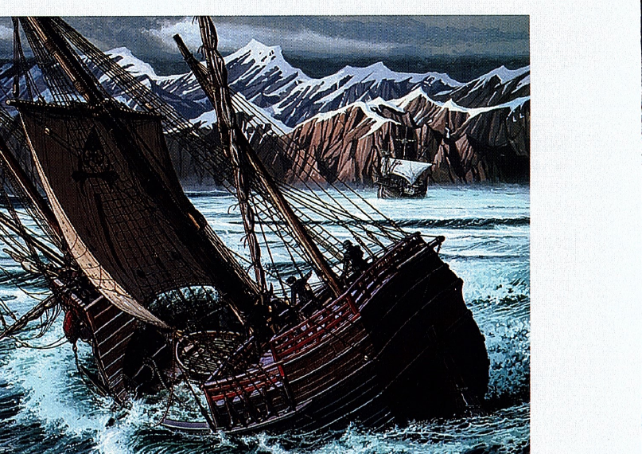

Do you like to explore new places? Why or why not?

Watch the video two or three times. Take notes in the first part of the chart.
| Risks | Outcomes |
|---|---|
| Notes from the video: | |
|
Set out on an expedition, headed west, unexplored, sailed across the Pacific
|
Men were sick and hungry, reached the Philippines and was killed, a single ship returned home, proved the world was round, brought back valuable spices
|
| My ideas: (see Activity C — Extend) | |
What are the risks or outcomes of other voyages or expeditions that you know about? Write your ideas in the chart above.
| Risks | Outcomes |
|---|---|
| Notes from the video: completed in Activity B | |
| My ideas: | |
|
Exploring space — could have an explosion or fail to return
|
Learn more about space; find places to live in the future
|
| Examples: Christopher Columbus's voyage to the Americas · The first Moon landing | |
Think about Listening 1, Listening 2, and the unit video as you discuss the questions.
One way to increase your vocabulary is to understand word families. Word families consist of words that come from the same root and are related in form. They usually include several different parts of speech (a noun, an adjective, and a verb form). The ending of the word often indicates the part of speech.
When you look up new words in the dictionary, look at the other words in the same word family. By doing this, you can add several new words to your vocabulary.
Another benefit of understanding word families is that when you see new words that look similar to words you already know, you can use your knowledge to figure out their meaning.
Work with a partner. Complete the word family chart with any forms of the words you know. Use a dictionary to check your answers.
| Verb | Noun | Adjective | Adverb |
|---|---|---|---|
| invent | inventor | inventive | inventively |
| develop | development | developmental | developmentally |
| discover | discovery | no word | no word |
| explore | exploration, explorer | exploratory | no word |
| finance | financer | financial | financially |
| locate | location | no word | no word |
| prove | proof | proven | no word |
| solve | solution | no word | no word |
Complete each sentence with an appropriate word from your completed chart in Activity A.